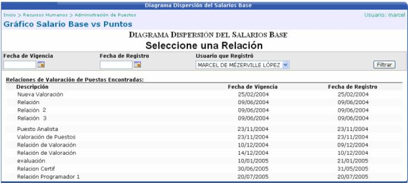
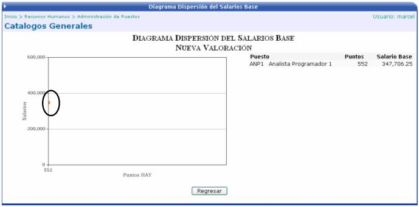

Se despliega una lista de relaciones de valoración de puestos que ya fueron aplicadas y el usuario deberá de seleccionar la que desea consultar:

Una Vez que se selecciona el registro, se muestra un gráfico con el comparativo del salario base de ese puesto con la puntuación obtenida en la valoración, esto con el fin de conocer si el salario base esta por encima o por debajo de la cantidad de puntos obtenidos:
